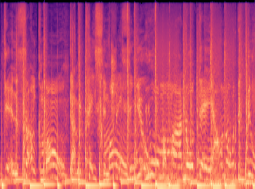
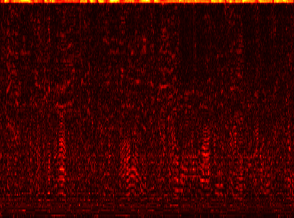
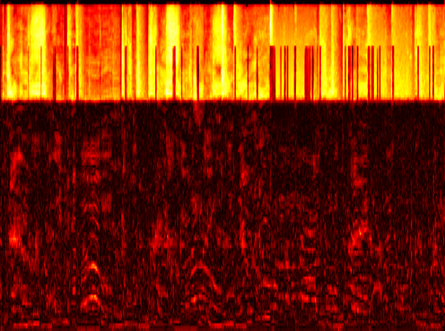
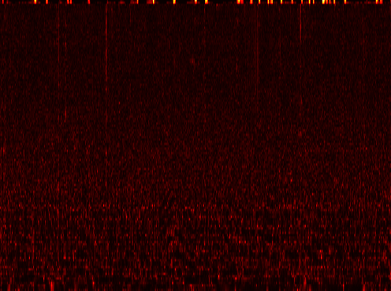
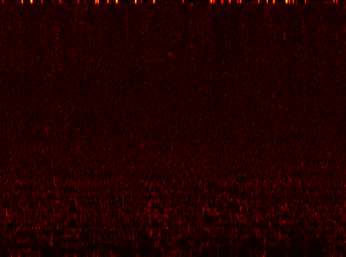

ICASSP 2025
Luca A. Lanzendörfer, Florian Grötschla, Michael Ungersböck, and Roger Wattenhofer
Comparison of MTG-Jamendo1 samples. The difference between the original and reconstructed mel spectrogram is shown.
Ground Truth
HiFi-GAN
BigVGAN
BigVGAN-v2
DisCoder
Comparison of MTG-Jamendo1 and MUSDB18-HQ2 samples.
Ground Truth
HiFi-GAN
BigVGAN
BigVGAN-v2
DisCoder
DisCoder shows competitive performance on speech samples taken from LibriTTS3.
Ground Truth
HiFi-GAN
BigVGAN
BigVGAN-v2
DisCoder
1https://mtg.github.io/mtg-jamendo-dataset/
2https://sigsep.github.io/datasets/musdb.html
3https://www.openslr.org/60/